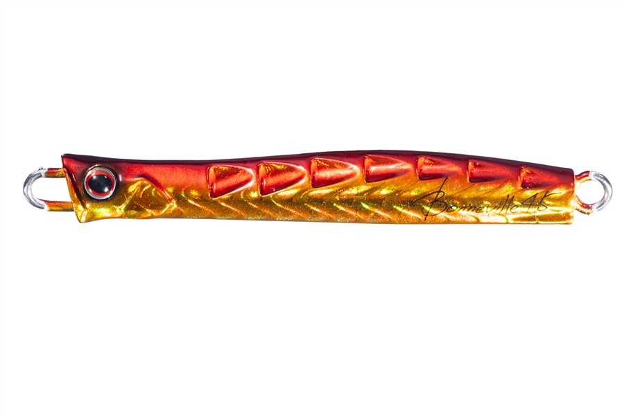
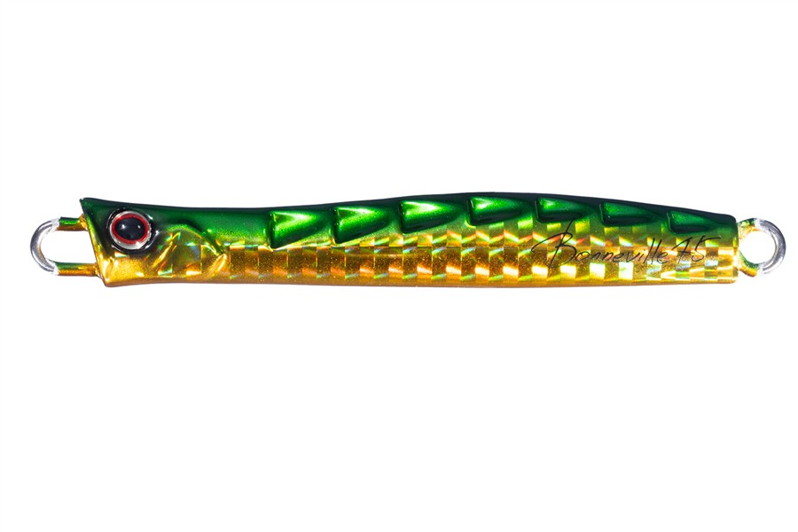
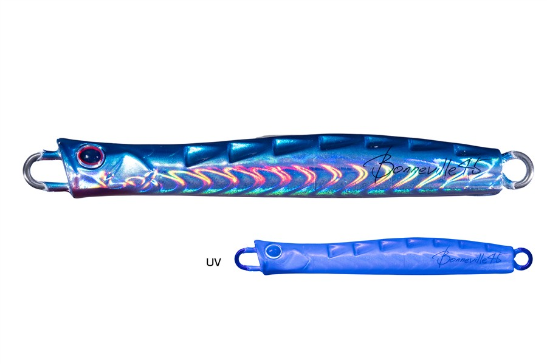
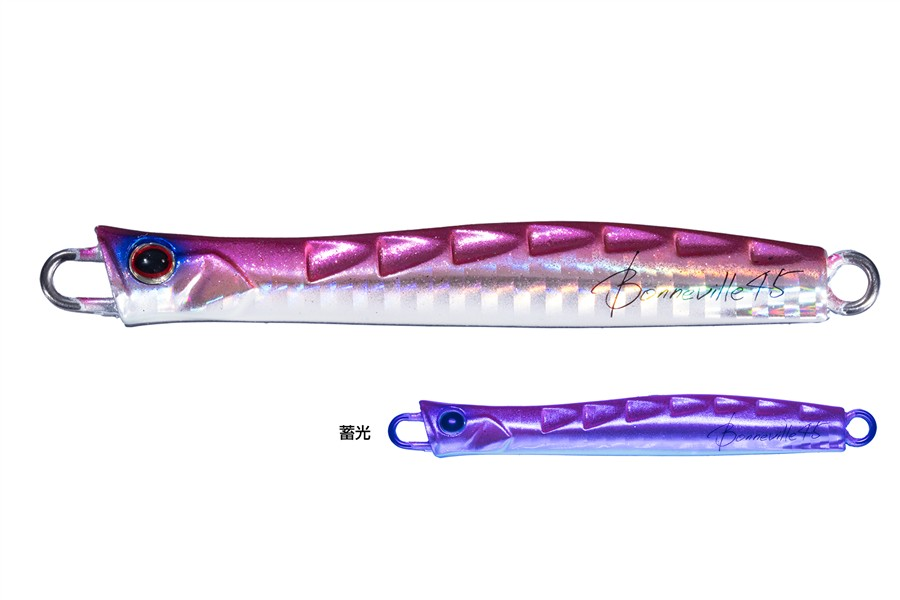

ボンネビル
（BONNEVILLE）
ボンネビル（BONNEVILLE）はO.S.P（オー・エス・ピー）のメタルジグです。
船宿・林遊船の林克樹さんが監修したサワラ専用設計で、「遠投」「速い沈み」「誰よりも速い巻き」の3つを1本に凝縮。巻き重りがなく、高速リトリーブを疲れずに続けられるのが最大の魅力です。

画像出典:OSP公式HP
スペック
- メーカー
- O.S.P（オー・エス・ピー）
- タイプ
- ハイスピードメタルジグ
- 自重
- 45g
- フック
- #1（太軸トリプルフック）
- 監修
- 林克樹（林遊船）
- ターゲット
- サワラ
- 価格
- 1,200円（税込）
- 発売
- 2025年9月
▼今すぐチェック

ボンネビルの特徴
遠投・速い沈み・高速巻きを凝縮した、サワラ専用設計のメタルジグ
-
巻き重りがない「Gouged Design」
丸ノミで彫ったような背中の形状が反転流を生み、アクションを制御しながら低重心化。シルエットを変えずに背を上に向けた姿勢を保ち、高速で巻いても重くなりにくい。
-
後方重心で飛距離と着底の速さを両立
重心を後ろに置くことで飛行姿勢が安定し、テールから素早く沈む。トラブルが起きにくいので、短いチャンスタイムに手を止めず投げ続けられる。
-
噛み付き系のバイトに強い大型トリプルフック
大型のトリプルフックがサワラ特有の噛み付くようなバイトと相性が良く、上下の顎をしっかり捉えてバラシを減らす。不意の大物にも備えた太軸を採用している。
ボンネビルの使い方
基本は遠投して着底させ、とにかく速く巻くだけ。巻き重りが少ないので、1日を通して高速リトリーブを続けるのがこのジグの使いどころです。
タックルの公式推奨は、ボートシーバス用またはブレードジギング用のロッドに、4000〜6000番のハイギア以上のスピニングリール、PE1.5号前後、リーダー25lb前後。水面を泡を纏って走らせるスキッピングにも対応しています（カツオ狙いでは太軸のフック・リングに交換）。
ボンネビルの得意な状況
いつバイトが出るか分からず、速い巻きを続ける持久戦になりやすいサワラキャスティングが最大の出番です。
トラブルが少ないので、短いチャンスタイムに投げ続けたい場面でも活きます。
手返しよく速く巻き続けられるので、短い時合いでも釣れるチャンスを逃しにくい1本です。
ワンポイント
巻きスピードが落ちると見切られやすいサワラには、疲れないうちから一定の速さを保つのがコツです。
反応がない時は、まず巻き始めるレンジを変え、それでも反応がなければカラーを替えて探ってみましょう。
人気カラー
人気カラーを紹介します。

アカキン濁り潮や朝夕のローライトに強い定番カラー。

グリーンゴールド緑と金の組み合わせで、濁りが入った時に存在感を出せる1色。

ケイムラカタクチカタクチイワシをイメージしたケイムラカラー。日中のナチュラルな誘いに。

ピンクグローベリーピンクとグローベリーの組み合わせ。ローライトでも見せやすい。
画像出典:OSP公式HP
▼今すぐチェック
ボンネビルに似ているルアー
-
 モンスーンブレイカーサワラ
ジップベイツ
詳細はこちら＞
モンスーンブレイカーサワラ
ジップベイツ
詳細はこちら＞
全長115mm・自重35gのサワラ向けジグミノー。深場の底まで素早く届き、ジャークとフォールで誘える。高速で巻き続けるボンネビルとは誘い方を変えたい時に。
-
 アスリート12SSP
ジャクソン
詳細はこちら＞
アスリート12SSP
ジャクソン
詳細はこちら＞
全長120mm・自重33gのシンキングペンシル。後方重心でメタルジグに匹敵する飛距離が出る。遠投性能はそのままに、スローに誘いたい時の選択肢に。
-
 コンタクト イーノ サワラチューン
タックルハウス
詳細はこちら＞
コンタクト イーノ サワラチューン
タックルハウス
詳細はこちら＞
全長129mm・重さ30gのサワラ専用ジグミノー。細身のボディで飛距離とスムーズな沈下を両立し、ローリングとテールスイングで誘える。